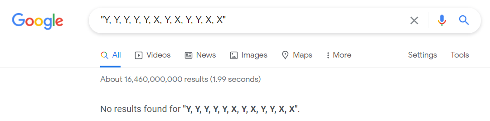
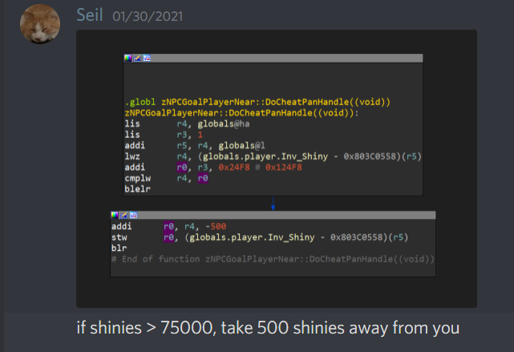

How I found an undiscovered cheat in Battle for Bikini Bottom 18 years after release
The Cheat
Before getting into the blog post, let me first share the cheat combination with you:
Panhandle: Y, Y, Y, Y, Y, X, Y, X, Y, Y, X, X
In Battle for Bikini Bottom cheat codes are performed by pausing the game, holding down L + R, and quickly entering the given button combination. You’ll hear a sound to confirm a succsessful entry. Note that the codes must be entered very quickly.
Cheat description
The internal name for the cheat is called sCheatPanHandle. When approaching a non-playable character, if the cheat is active, and the player has over 75,000 shiny objects, the player will lose 500 shiny objects every few seconds.
The cheat is aptly named, as it appears that the player is giving the homeless NPC money.
Finding the Cheat
As someone who had played this game as a 10 year old back in 2003, I have been interested in the reverse engineering efforts of this game. I am one of the few people who actively participate in the BFBB Decompilation project (described here). This project is a reverse engineering of the GameCube version of BFBB from original assembly code to a high level version of C++ that compiles back into the same matching assembly code. Over the past half a year or so I have worked across every area of this project and have decompiled a few individual files by hand.
zGameExtras
After being inspired to learn about the code that changes the Tublet’s colors,
I began decompiling the file zGameExtras.cpp
to see if there were any other unknown days which prompted special effects or gameplay.
After successfuly decompiling that function (EGG_check_ExtrasFlags), I naturally continued to decompile the entire file.
When it came time to extract the file’s global variables from the ROM, I found that there was a contiguous list of 21 cheats, each having a name, and being comprised of an array of 16 possible buttons. I hacked together a quick python script to extract these, and the result was every cheat combination in the game:
#define Y (1 << 18)
#define X (1 << 17)
// 21 cheats
static uint32 sCheatAddShiny[16] = { 0, 0, 0, 0, 0, 0, 0, 0, Y, X, X, Y, Y, X, X, Y };
static uint32 sCheatAddSpatulas[16] = { 0, 0, 0, 0, 0, 0, 0, 0, X, Y, Y, X, X, Y, Y, X };
static uint32 sCheatBubbleBowl[16] = { 0, 0, 0, 0, 0, 0, 0, 0, X, Y, X, Y, X, X, Y, Y };
static uint32 sCheatCruiseBubble[16] = { 0, 0, 0, 0, 0, 0, 0, 0, Y, X, Y, X, Y, Y, X, X };
static uint32 sCheatMonsterGallery[16] = { 0, 0, 0, 0, 0, 0, 0, 0, X, Y, X, Y, Y, X, Y, X };
static uint32 sCheatArtTheatre[16] = { 0, 0, 0, 0, 0, 0, 0, 0, Y, X, Y, X, X, Y, X, Y };
static uint32 sCheatChaChing[16] = { Y, X, Y, X, X, Y, X, X, X, Y, Y, Y, Y, X, X, Y };
static uint32 sCheatExpertMode[16] = { X, X, X, Y, Y, X, X, X, Y, X, Y, Y, Y, X, Y, Y };
static uint32 sCheatSwapCCLR[16] = { 0, 0, 0, 0, 0, 0, 0, 0, Y, Y, X, X, X, X, Y, Y };
static uint32 sCheatSwapCCUD[16] = { 0, 0, 0, 0, 0, 0, 0, 0, Y, X, X, X, X, X, X, Y };
static uint32 sCheatRestoreHealth[16] = { 0, 0, 0, 0, X, X, X, X, Y, X, Y, X, Y, Y, Y, Y };
static uint32 sCheatShrapBob[16] = { 0, 0, 0, 0, X, X, X, X, Y, Y, X, Y, X, X, X, Y };
static uint32 sCheatNoPants[16] = { 0, 0, 0, 0, X, X, X, X, Y, X, X, Y, X, Y, Y, X };
static uint32 sCheatCruiseControl[16] = { 0, 0, 0, 0, X, X, X, X, Y, Y, X, X, Y, X, Y, Y };
static uint32 sCheatBigPlank[16] = { 0, 0, 0, 0, Y, Y, Y, Y, X, Y, X, Y, X, X, X, X };
static uint32 sCheatSmallPeep[16] = { 0, 0, 0, 0, Y, Y, Y, Y, Y, X, Y, X, Y, X, Y, X };
static uint32 sCheatSmallCoStars[16] = { 0, 0, 0, 0, Y, Y, Y, Y, X, Y, X, Y, Y, Y, Y, Y };
static uint32 sCheatRichPeep[16] = { 0, 0, 0, 0, Y, Y, Y, Y, Y, X, Y, X, X, Y, X, Y };
static uint32 sCheatPanHandle[16] = { 0, 0, 0, 0, Y, Y, Y, Y, Y, X, Y, X, Y, Y, X, X };
static uint32 sCheatMedics[16] = { 0, 0, 0, 0, Y, Y, Y, Y, Y, X, Y, X, X, X, Y, Y };
static uint32 sCheatDogTrix[16] = { 0, 0, 0, 0, Y, Y, Y, Y, Y, X, Y, X, Y, X, X, Y };Confirming the Cheat
After I shared my findings with the other people working on the project, we cross referenced these combinations with cheat websites found on the internet. While some websites had some cheats, and some had others, it seemed like they were more or less all accounted for… except one. Panhandle. In fact, there was no mention of it anywhere on the internet.

After realizing we couldn’t find a description of this cheat, we scoured the limited source code to see if we could figure out where this cheat affects the game. We found a function who’s name contained Panhandle and seemed to have relevant code:

While this quick assesment looked correct, I wanted to verify it, so I decompiled the function. It did indeed match the assumption:
void zNPCGoalPlayerNear::DoCheatPanHandle()
{
if (globals.player.Inv_Shiny > 75000)
{
globals.player.Inv_Shiny -= 500;
}
}The cheat was shortly confirmed to work by another person who tested it in-game.
Conclusion
How did this cheat go undetected for years? It’s hard to say. We can only really speculate. I believe it was common practice back in the day for game developers to disclose their cheat codes to game journalists/book publishers. Perhaps this cheat was so useless that the devs thought it wouldn’t be worth releasing?
It completely amazes me to think that almost two decades after release, people are still finding hidden details about this game. It certainly makes you wonder how many other games have hidden details that are yearning to be be discovered, yet never will. This sort of “digital archaeology” is fascinating to me, and I’m glad I was able to put my little dent in the history of one of my childhood favorite games, even if the cheat is objectively stupid and useless.